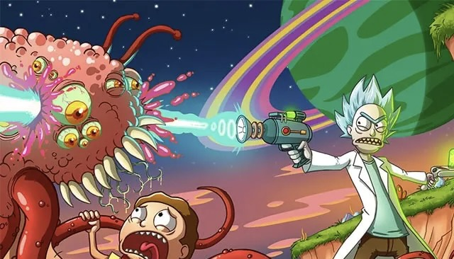
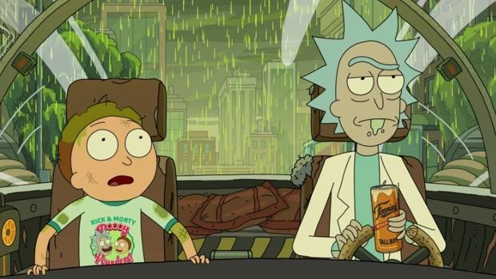
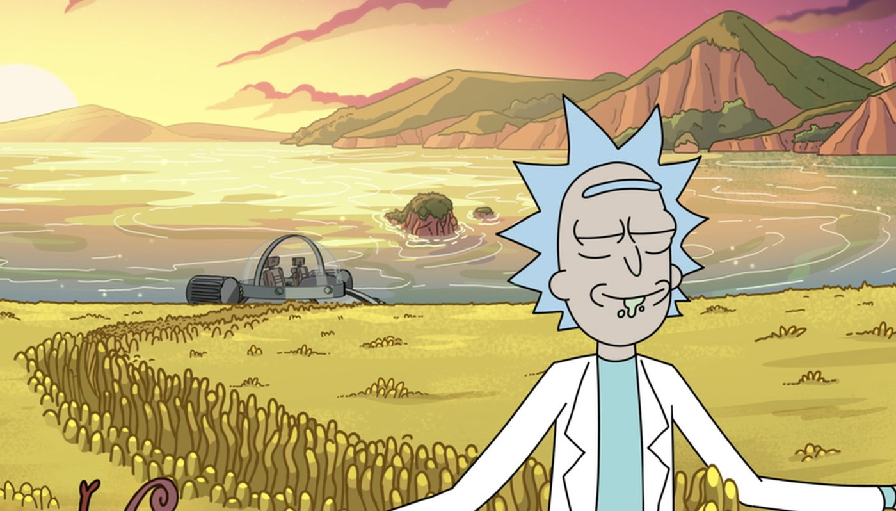

Rick y Morty
ACERCA DE
PERSONAJES
RESEÑA
Las surrealistas aventuras interdimensionales de un genio científico alcohólico y su nervioso nieto de gran corazón pero con ansiedad crónica no sólo nos proporcionan un entretenimiento de gran calidad, sino que ofrecen una evidente deconstrucción de la sitcom clásica, con un humor crítico e irreverente que no evita meter el dedo en la llaga en los asuntos más candentes, incómodos e hirientes de la sociedad "moderna" en que vivimos. Te proponemos un divertido (y desvergonzado) repaso por la historia de la serie, sus curiosidades más locas y aspectos que tal vez desconocías. Ah, y si tienes la poca vergüenza de no haber visto aún la serie...¡hazte el favor de tragártela lo antes posible y regresa cuanto antes para leer este artículo! Mueve el culo y no pierdas el tiempo...¡el multiverso te espera! Mark Justin Roiland (1980) es un creador, director, guionista y productor estadounidense conocido por poner la voz al Conde de Lemongrab (Limoncio en España, Limonagrio en Hispanoamérica) en Adventure Time, a Blendin Benjamin Blandin en Gravity Falls y a Oscar en Fish Hooks (una especie de parodia spin-off de SpongeBob SquarePants). Es cocreador, coescritor y productor ejecutivo de Rick y Morty junto a Dan Harmon, además de encargarse de poner la voz a los dos personajes que dan título a la serie. Dan Harmon (1973) es un guionista y animador estadounidense, co-creador de Rick y Morty y co-fundador de Channel 101, una web sin ánimo de lucro a la que los participantes envían un cortometraje en el formato de un piloto de televisión de menos de cinco minutos de duración y que sirve de plataforma a sus creaciones y a las de nuevos cómicos. Todo eso sin olvidar su imprescindible podcast semanal, Harmontown, que también es el nombre de un documental sobre la trayectoria de este peculiar personaje.
Rick Sánchez es la definición exacta de "científico loco". Es alcohólico, es un genio, es irresponsable y está loco. Rick acaba de mudarse a casa de su hija Beth y allí recuerda que tiene un nieto llamado Morty. Sin preguntar a nadie, decide que va a obligarle a que le acompañe a todo tipo de aventuras para que el chico se vuelva inteligente como él y no se convierta en un idiota como Jerry, padre de Morty y yerno de Rick. Así, Rick y Morty comienzan a vivir aventuras intergalácticas a pesar de que la familia no quiere que lo sigan haciendo. Poco a poco tienen que intentar encontrar un equilibrio entre su vida familiar y sus viajes a través del espacio y por distintas realidades paralelas, algo que no es fácil para el pequeño Morty que es incapaz de tener una vida normal al margen de su abuelo. Justin Roiland (Hora de aventuras) es el encargado de dar voz a los dos personajes principales: Rick y Morty. Sarah Chalke (Scrubs) interpreta a Beth Smith, Chris Parnell (Archer) es Jerry y Spencer Grammer (Greek) es Summer Smith, la hermana mayor de Morty. En España, el reparto de doblaje está compuesto por Txema Moscoso, Rodri Martín, Héctor Indriago, Susana Damas y Sara Iglesias. Rick y Morty es una animación de ciencia ficción para adultos creada, producida y escrita por Justin Roiland (Hora de aventuras) y Dan Harmon (Community, Monster House) para Adult Swim. Justin Roiland's Solo Vanity Card Productions, Harmonious Claptrap y Williams Street son las empresas productoras junto a Starburns Industries (del año 2013 al 2014) y Rick and Morty, LLC. (de 2015 hasta el presente).


